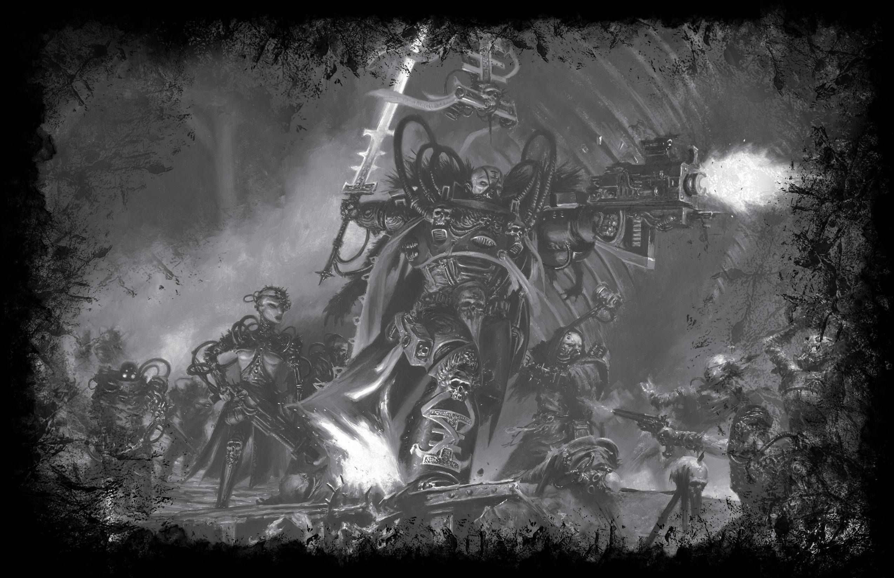

译者：浣熊旅記
玩家可以在创建《黑暗异端》角色时使用以下表格。使用这些额外表格并非强制要求，而旨在为玩家提供充实角色细节的灵感，包括角色外貌和细微的身体特征、特殊的家园世界信仰，以及来自侍僧过去生活的纪念品。我们鼓励玩家将这些表格作为起点，丰富角色的成长经历和个人履历，例如失去的挚爱、珍贵的童年回忆、关键的遭遇，以及其它任何塑造了角色如今形象的事件。
外貌包含角色所有的身体特征，例如体型、年龄、肤色和身体特点。尽管随机生成外貌会很有趣，但玩家可以随个人喜好更改投掷结果，甚至根据角色的起源地区或情况创建合适的新条目。
| 出目 | 蛮荒世界 | 铸造世界 | ||||
|---|---|---|---|---|---|---|
| 描述 | 男性 | 女性 | 描述 | 男性 | 女性 | |
| 01~20 | 高大瘦削 | 1.90m/65kg | 1.80m/60kg | 体型下限 | 1.70m/55kg | 1.60m/50kg |
| 21~50 | 精瘦结实 | 1.75m/60kg | 1.65m/55kg | 低于标准 | 1.75m/65kg | 1.65m/50kg |
| 51~80 | 肌肉发达 | 1.85m/85kg | 1.70m/70kg | 标准体型 | 1.80m/75kg | 1.70/70kg |
| 81~90 | 矮壮敦实 | 1.65m/80kg | 1.55/70kg | 高于标准 | 1.85m/85kg | 1.70m/70kg |
| 91~100 | 高大魁梧 | 2.10m/120kg | 2m/100kg | 体型上限 | 1.90m/100kg | 1./90kg |
| 出目 | 贵族生人 | 巢都世界 | ||||
|---|---|---|---|---|---|---|
| 描述 | 男性 | 女性 | 描述 | 男性 | 女性 | |
| 01~20 | 身形纤细 | 1.75m/65kg | 1.65m/60kg | 发育不良 | 1.60m/45kg | 1.55m/40kg |
| 21~50 | 修长苗条 | 1.85m/70kg | 1.75m/65kg | 瘦弱干瘪 | 1.70m/55kg | 1.60m/50kg |
| 51~80 | 身材健美 | 1.75m/70kg | 1.65m/60kg | 精干利落 | 1.75m/65kg | 1.65m/55kg |
| 81~90 | 体格健壮 | 1.90m/90kg | 1.80m/80kg | 修长瘦高 | 1.80m/65kg | 1.70/60kg |
| 91~00 | 力量强劲 | 1.80m/100kg | 1.70m/90kg | 壮实粗犷 | 1.75m/80kg | 1.65/75kg |
| 出目 | 圣殿世界 | 虚空生人 | ||||
|---|---|---|---|---|---|---|
| 描述 | 男性 | 女性 | 描述 | 男性 | 女性 | |
| 01~20 | 身体赢弱 | 1.60m/45kg | 1.55m/40kg | 骨瘦如柴 | 1.75m/55kg | 1.70m/50kg |
| 21~50 | 体质衰弱 | 1.70m/55kg | 1.60m/50kg | 发育迟缓 | 1.65m/55kg | 1.55m/45kg |
| 51~80 | 虔诚清瘦 | 1.75m/60kg | 1.65m/55kg | 枯瘦憔悴 | 1.80m/60kg | 1.75m/60kg |
| 81~90 | 蒙福强健 | 1.90m/95kg | 1.80m/70kg | 瘦高细长 | 2m/80kg | 1.85m/70kg |
| 91~00 | 富态丰腴 | 1.65m/85kg | 1.55/75kg | 纺锤身形 | 2.10m/75kg | 1.95m/70kg |
唯有帝皇知晓他人的真面目。
| 出目 | 蛮荒世界 | 铸造世界 | 贵族生人 | 巢都世界 | 圣殿世界 | 虚空生人 |
|---|---|---|---|---|---|---|
| 01~10 | 战士 (15+1d10) | 入门 (15+1d10) | 继承人 (20+1d10) | 新丁 (15+1d10) | 见习修士 (20+1d10) | 青年 (15+1d10) |
| 11~20 | 战士 (15+1d10) | 入门 (15+1d10) | 继承人 (20+1d10) | 新丁 (15+1d10) | 见习修士 (20+1d10) | 青年 (15+1d10) |
| 21~30 | 战士 (15+1d10) | 成熟 (25+1d10) | 继承人 (20+1d10) | 新丁 (15+1d10) | 正式修士 (25+1d10) | 青年 (15+1d10) |
| 31~40 | 战士 (15+1d10) | 成熟 (25+1d10) | 继承人 (20+1d10) | 成人 (25+1d10) | 正式修士 (25+1d10) | 青年 (15+1d10) |
| 41~50 | 战士 (15+1d10) | 成熟 (25+1d10) | 继承人 (20+1d10) | 成人 (25+1d10) | 正式修士 (25+1d10) | 成熟 (20+1d10) |
| 51~60 | 战士 (15+1d10) | 成熟 (25+1d10) | 当权者 (30+1d10) | 成人 (25+1d10) | 正式修士 (25+1d10) | 成熟 (20+1d10) |
| 61~70 | 战士 (15+1d10) | 成熟 (25+1d10) | 当权者 (30+1d10) | 成人 (25+1d10) | 正式修士 (25+1d10) | 成熟 (20+1d10) |
| 71~80 | 年长战士 (25+1d10) | 成熟 (25+1d10) | 当权者 (30+1d10) | 成人 (25+1d10) | 正式修士 (25+1d10) | 长寿 (50+1d10) |
| 81~90 | 年长战士 (25+1d10) | 威望 (45+1d10) | 位高权重 (40+1d10) | 成人 (25+1d10) | 年长修士 (50+1d10) | 长寿 (50+1d10) |
| 91~00 | 年长战士 (25+1d10) | 威望 (45+1d10) | 位高权重 (40+1d10) | 老手 (35+1d10) | 年长修士 (50+1d10) | 长寿 (50+1d10) |
| 出目 | 蛮荒世界 | 铸造世界 | ||||
|---|---|---|---|---|---|---|
| 肤色 | 发色 | 瞳色 | 肤色 | 发色 | 瞳色 | |
| 01~30 | 深色 | 红色 | 蓝色 | 深色 | 铁锈色 | 棕色 |
| 31~50 | 晒黑 | 金色 | 灰色 | 晒黑 | 金色 | 绿色 |
| 51~70 | 白皙 | 棕色 | 棕色 | 白皙 | 棕色 | 蓝色 |
| 71~90 | 红润 | 黑色 | 绿色 | 红润 | 黑色 | 灰色 |
| 91~00 | 古铜色 | 灰色 | 黄色 | 苍白 | 无 | 义眼（任意） |
| 出目 | 贵族生人 | 巢都世界 | ||||
|---|---|---|---|---|---|---|
| 肤色 | 发色 | 瞳色 | 肤色 | 发色 | 瞳色 | |
| 01~30 | 深色 | 染发（任意） | 蓝色 | 深色 | 棕色 | 蓝色 |
| 31~50 | 晒黑 | 金色 | 灰色 | 晒黑 | 鼠灰色 | 灰色 |
| 51~70 | 白皙 | 棕色 | 棕色 | 白皙 | 染发（任意） | 棕色 |
| 71~90 | 红润 | 黑色 | 绿色 | 红润 | 灰色 | 绿色 |
| 91~00 | 染色（任意） | 灰色 | 义眼（任意） | 受损 | 黑色 | 义眼（任意） |
| 出目 | 圣殿世界 | 虚空生人 | ||||
|---|---|---|---|---|---|---|
| 肤色 | 发色 | 瞳色 | 肤色 | 发色 | 瞳色 | |
| 01~30 | 深色 | 无 | 琥珀色 | 瓷白 | 姜红色 | 水蓝色 |
| 31~50 | 晒黑 | 金色 | 棕色 | 白皙 | 金色 | 灰色 |
| 51~70 | 白皙 | 黑色 | 灰色 | 泛蓝 | 铜色 | 黑色 |
| 71~0 | 红润 | 棕色 | 蓝色 | 灰白 | 黑色 | 绿色 |
| 91~00 | 雀斑 | 黄褐色 | 翡翠绿 | 乳白色 | 赭色 | 紫罗兰色 |
| 出目 | 蛮荒世界 | 铸造世界 | 贵族生人 | 巢都世界 | 圣殿世界 | 虚空生人 |
|---|---|---|---|---|---|---|
| 01~06 | 指关节多毛 | 辐射疤痕 | 缺失一截指尖 | 薄嘴唇 | 眉毛浓密 | 脚趾修长 |
| 07~12 | 连眉 | 头部硕大 | 鹰钩鼻 | 肮脏的皮肤 | 长鼻 | 头发细软 |
| 13~18 | 战纹涂彩 | 机械教纹身 | 牙齿洁白 | 涂色的指甲 | 国教纹身 | 手指修长 |
| 19~24 | 双手巨大 | 歪鼻 | 决斗疤痕 | 烂牙 | 棱脊状指甲 | 耳朵很小 |
| 25~30 | 磨尖的牙齿 | 金属气味 | 鼻环穿孔 | 褪色的电路刺青 | 牙齿歪斜 | 四肢细长 |
| 31~36 | 眉骨突出 | 眼睛细小 | 头发油亮 | 眉毛穿孔 | 下巴开裂 | 黄色指甲 |
| 37~42 | 麝香体味 | 煤烟熏黑的皮肤 | 天鹰纹身 | 面部金属网格 | 皮肤干燥 | 牙齿短钝 |
| 43~48 | 浑身多毛 | 酸蚀烧伤 | 香水气味 | 时不时干咳 | 眉毛粗厚 | 宽眼距 |
| 49~54 | 撕裂的耳朵 | 眉毛缺失 | 痘疤 | 单眼纹身 | 染墨的指甲 | 头部硕大 |
| 55~60 | 指甲修长 | 机械音 | 虔诚疤痕 | 弹痕疤疮 | 耳朵干瘪 | 脊柱弯曲 |
| 61~66 | 部族纹身 | 缺一只耳朵 | 装饰性电路刺青 | 神经性抽搐 | 仪式疤痕 | 无毛 |
| 67~72 | 满身疤痕 | 破碎的脚趾 | 手指颤抖 | 巨大的痣 | 第三个乳头 | 手型优雅 |
| 73~78 | 鼻环 | 斜视 | 耳朵穿孔 | 污染疤痕 | 双眼充血 | 轻微斗鸡眼 |
| 79~84 | 猫眼 | 手指短小 | 恶性疖肿 | 驼背 | 散发霉味 | 蹼状脚趾 |
| 85~90 | 头部较小 | 眼部金属栅网 | 锋利的颧骨 | 手掌很小 | 酒渍胎记 | 轻微跛行 |
| 91~96 | 下颌粗壮 | 褪色的指甲 | 步态慵懒 | 散发化学气味 | 肩膀宽阔 | 异色双瞳 |
| 97~00 | 在本表上掷骰两次，两个结果同时生效 | |||||
下文列举了来自侍僧家园世界的各种特殊信仰。玩家可以利用下表进一步充实和塑造角色。这些社会习俗可能在其世界上占据主导地位，也可能仅存在于侍僧过去所处的小群体中。
| 出目 | 信仰 |
|---|---|
| 01~10 | 大地庇佑：世界会庇护尊重它的人；为皮肤涂上一把来自家乡的土壤能保护你免受恶灵侵扰。 |
| 11~20 | 不祥色彩：天空在不自然的色调中闪烁，预示部落最大灾难将至；每当此色出现，必须避而远之。 |
| 21~30 | 猎手誓约：食用非亲手所杀之食粮会招致厄运，唯有虔诚忏悔能平息愤怒的魂灵。 |
| 31~40 | 渴血之刃：武器的魂灵饥渴而贪婪；每次出鞘必须见血，否则大祸将降临于持刃者周遭。 |
| 41~50 | 灵魂枷锁：所有物品均会承载主人的部分灵魂；从败敌手中夺取战利品将带来巨大的好运。 |
| 51~60 | 光荣赴死：牺牲带来荣誉，而怯懦带来耻辱。先祖在注视，别让他们失望。 |
| 61~70 | 避讳真名：切勿使用亲友的真名；暗影始终在倾听，并伺机用其行恶。 |
| 71~80 | 孤寂亡魂：切勿说出亡者的真名，以免将其从虚空中召唤归来。 |
| 81~90 | 鲜活记录：每次胜利都必须被记录；疤痕与纹身可以确保帝皇能看到他们的光辉事迹。 |
| 91~00 | 神圣大地：与大地分离会扰乱自然的平衡；脱离行星怀抱的日子是不祥且反常的。 |
| 出目 | 信仰 |
|---|---|
| 01~10 | 原生金属：铸造厂的原料金属与在此出生的每个人相连；遇到这种金属时，可以轻柔地擦拭或为其上油来提升统计概率。 |
| 11~20 | 物尽其用：世间没有无用的材料；不要浪费任何东西，始终寻求重复利用和翻新，以免其中的灵魂不悦。 |
| 21~30 | 二元完美：机器以二进制语昭示正道。生命也应成双成对，尽可能化奇数为偶数，以尊崇平衡之道。 |
| 31~40 | 惩戒血肉：必须时刻提醒肉体其固有的脆弱；对自己施加轻微的折磨与痛苦，能为附近的机魂带来力量。 |
| 41~50 | 净化之火：锻炉将矿石精炼为金属；始终寻求热力与蒸汽来净化心灵，坚定意志。 |
| 51~60 | 安抚机魂：安抚机器即赞美其魂灵；轻柔的嗡鸣与低沉的和声能为使用者带去设备的青睐。 |
| 61~70 | 永不止息：机器不应静止；务必勤用设备的所有活动部件，激活其动力装置，以免机魂归于沉寂而消逝。 |
| 71~80 | 叩击祈福：受认可的机魂会良好回应其使用者；用两根手指轻叩设备两下，可以安抚机魂并带来好运。 |
| 81~90 | 尊崇金属：机器不应被遗忘；每当在尘土中发现遗落的零件或碎片，将其拾起并置于显眼位置，以表彰它的服务。 |
| 91~00 | 厌恶原始：血肉之躯最好由机器祝福过的食物服侍；避免食用未经适当处理和加工的饮食。 |
| 出目 | 信仰 |
|---|---|
| 01~10 | 计数恩典：了解权力就是延续权力；维持一份债务与人情账目有助于确保权力得以维系和增强。 |
| 11~20 | 处处征途：踏上新世界即预示着新的征途；踏上新世界的第一步必须是坚定的重踏，以开始驯服它。 |
| 21~30 | 层层防护：将事务委诸他人，便是将其伪装；尽可能让他人执行你的指令，使其永远无法追溯到源头。 |
| 31~40 | 保持距离：亲近滋生轻蔑；务必与下属保持距离，以免他们误以为与你平等。 |
| 41~50 | 片甲不留：满足口腹，彰显地位；切勿留下未吃完的餐食，以免让下等人享用到远高于其身份的饮食。 |
| 51~60 | 出言有力：当位尊者发言时，不应有人充耳不闻；务必以强而有力的语调说话，恰当地震慑在场的所有人。 |
| 61~70 | 举止有仪：恰当的举止是对血脉的真正考验；处变不惊，保持最优雅的风度，永不玷污家族名声，这些都是贵族的标志。 |
| 71~80 | 谨防投毒：通往心脏最快的方式是经过胃；对来历不明的食物保持警惕，以免那是最后一餐。 |
| 81~90 | 权力之饰：为了恰当行使权力，展示权力至关重要；穿着华服、手持权杖或其他控制器具、保持发型考究，这些应始终是目标。 |
| 91~00 | 隐藏实力：隐藏的实力就是加倍的实力；务必克制，不显露全部能力，以确保仍有惊喜可用。 |
| 出目 | 信仰 |
|---|---|
| 01~10 | 触摸天穹：触碰上方坚固的金属便能寻得宁静；每当进入新的居所，务必伸手触摸天花板以示对栖身之地的敬意。 |
| 11~20 | 祸从暗出：未照亮之处危险重重；尽可能让灯光和火炬保持明亮，切勿离开它们的庇护。 |
| 21~30 | 战前蓄力：战斗前用近战武器轻敲墙壁或地面，使其汲取一丝巢都的力量与威能。 |
| 31~40 | 人多势众：唯有身处同巢之众的环绕中，巢都才算完整；房间绝不应太过拥挤或空无一人。 |
| 41~50 | 疑忌陌生：熟悉催生安逸；陌生的地点、人群或景象应予以规避，因其只会带来不受欢迎的变故。 |
| 51~60 | 强固巢魂：将零散物品堆成金字塔形可提振巢都之灵并带来好运，直至下一觉睡醒。 |
| 61~70 | 畏惧寂静：巢都永远充满噪音；寂静意味着死亡将至，如果寂静降临，需要制造噪音以驱除厄运。 |
| 71~80 | 远离自然：低等生命不应侵扰巢都生活；拔除并丢弃杂草可以换取好运。 |
| 81~90 | 巢与肤：让巢都成为血肉的一部分，并尊崇其魂灵；常用指甲摩擦地上的尘土或金属碎屑来确保好运。 |
| 91~00 | 独处为金：对拥挤众生而言，最微小的隐私亦是无价之宝；隐居应被尊重与珍视。 |
| 出目 | 信仰 |
|---|---|
| 01~10 | 尊重颅骨：逝后仍服侍者尤受眷顾；应对所有伺服颅骨示以敬意，尊崇其职责。 |
| 11~20 | 恒久安息：敬重逝者，切勿冒然行动或比手势；绝对的静默是至高的尊崇。 |
| 21~30 | 苦行朝圣：唯经痛苦，朝圣者方能真切感念他人之牺牲；其途经的任何道路上都会撒布铁钉或尖锐石块。 |
| 31~40 | 勿扰亡者：当允长眠者安息；切勿跨越坟墓，甚至任何曾有过死亡之地。 |
| 41~50 | 天象启示：上空之模式可昭示下方之信仰；烟云的色彩与形状能预示即将遇见的朝圣者所持的信仰。 |
| 51~60 | 挑战太阳：信仰强于自然；每日直视太阳，直至它屈从于人类主宰。 |
| 61~70 | 磐石永固：进入新建筑时，用力推压墙壁以确证其如信仰般坚固永恒。 |
| 71~80 | 奇数兆亡：任何人数为奇数的朝圣团体必在日落前遭遇死亡，故应确保将其拆分或合并为偶数。 |
| 81~90 | 祭酒于亡：任何液体的第一口皆应啐吐于地，作为献给那些为帝国存续而牺牲者的祭品。 |
| 91~00 | 天鹰赐福：帝皇的标志神圣不可亵渎；受天鹰礼后，务必以相同手势回应。 |
| 出目 | 信仰 |
|---|---|
| 01~10 | 舱壁钉甲：在舱壁基座留下一堆剪下的脚趾甲（越长越好），可以增强其强度。 |
| 11~20 | 闹鬼甲板：如果一个区域的灯光在一次轮班中熄灭三次，经过时需用一只手遮住眼睛。这样可以通 过而不被禁锢其中的愤怒灵魂发现。 |
| 21~30 | 舱门敞开：始终让舱门敞开，确保船魂能够自由移动。 |
| 31~40 | 不祥蚀影：当舰船处于阴影中时，避免进行重要行动。 |
| 41~50 | 忌惮八星：当看到八颗耀眼恒星排列成八芒星状时，做出天鹰标志，以免邪恶的灵体注意到未受保护 的灵魂。 |
| 51~60 | 第三凶兆：如果一个舰队并排驶来，经过视窗的第三艘船注定会带来厄运。 |
| 61~70 | 等离子轰鸣：如果舰船引擎突然发出剧烈的轰鸣和振动，应在甲板上顿足三次作为回应。 |
| 71~80 | 好运涂抹：如果得到真正的肉类，应先将其在墙壁或舱壁上上下摩擦两次，这样舰船的好运就会渗透到食物中。 |
| 81~90 | 敲打弹壳：装填武器前，将三发弹壳弹向天花板。如果全部接住，这梭弹药就会变得幸运。 |
| 91~00 | 黑暗祭品：为了驱除厄运，可以冒险前往下层甲板，将一日口粮扔进黑暗。如果听不到落地的声音，好运必定会回归。 |
有些侍僧会保留一小件饰品，作为与其出生地的联结。尽管这些物品的价值相对低廉，但它却是对其过往生活的无价纪念——远在他或她开始为帝皇效忠之前，那时一切都比现在简单得多。玩家应当思考他们的侍僧如何获得此物，以及它可能承载的个人意义。这可能是一件“故土”之物、一件家族传家宝，或是能让他们想起重大事件的物品。
尽管大多数纪念品没有游戏规则上的实际用途，但它们会是角色在沉思时、或在亚空间航行中与同袍消磨时光时可能把玩的物件。纪念品也可能是在需要精神支持时，或是作为提醒自己已走出卑微出身多远时，侍僧会寻求慰藉的物品。
请在表 S-11：家园世界纪念品上掷骰，以确定侍僧随身携带的物品。如果玩家骰出双数（11/22/33 等），则可以在相应表格上再次掷骰，为侍僧获得第二件纪念品。
| 出目 | 蛮荒世界 | 铸造世界 | 贵族生人 |
|---|---|---|---|
| 01~05 | 一缕编发 | 颅骨碎片 | 锦缎外套 |
| 06~10 | 动物头骨 | 铜制小碟 | 金属洛草烟盒 |
| 11~15 | 一袋故乡土壤 | 一瓶沙 | 破烂的披风 |
| 16~20 | 断裂的矛尖 | 折断的锁 | 祖传军刀（已断） |
| 21~25 | 皮革小袋 | 塑钢弹珠 | 玻璃钢圆盘 |
| 26~30 | 一束干树叶 | 压平的叶子 | 项链 |
| 31~35 | 雕刻的偶像 | 扭曲的金属线 | 金属长笛 |
| 36~40 | 石制指环 | 一块煤 | 励志语录书 |
| 41~45 | 风干的脐带（你自己的） | 油腻的短杆（2 厘米） | 帝皇圣像 |
| 46~50 | 打火棒 | 一罐骨灰 | 金属硬币（弯曲的） |
| 51~55 | 毛皮或兽皮斗篷 | 一段导线绝缘管 | 古董耳环 |
| 56~60 | 石刀 | 烧穿孔的手帕 | 破旧的丝绒斗篷 |
| 61~65 | 兽皮靴 | 鞋带 | 惹眼的帽子 |
| 66~70 | 人类头骨 | 有污迹的光学镜片 | 线香 |
| 71~75 | 皮革护腕 | 断牙（不是你自己的） | 旧钥匙 |
| 76~80 | 一袋骨灰 | 一小瓶用过的润滑油 | 彩色玻璃碎片 |
| 81~85 | 牙齿项链 | 染血的方巾 | 头巾 |
| 86~90 | 兽脂蜡烛 | 折断的卡钳 | 颅骨护符 |
| 91~95 | 仪式面具 | 损坏的仿生手指 | 朝圣者徽记 |
| 96–00 | 风干青蛙 | 破裂的瞄准镜 | 一小瓶圣水 |
| 出目 | 巢都世界 | 圣殿世界 | 虚空生人 |
|---|---|---|---|
| 01~05 | 厚重手套 | 雏鸟的羽毛 | 一袋盐 |
| 06~10 | 帮派/巢都色调夹克 | 烧焦的朝圣绶带 | 仪式佩剑（破损） |
| 11~15 | 一副纸牌 | 鞣制皮革碎片 | 尸体毛发护身符 |
| 16~20 | 木制骰子 | 一袋蜡屑 | 三颗石英弹珠 |
| 21~25 | 用过的弹壳 | 布质肩带 | 骨制骰子 |
| 26~30 | 雕花匕首 | 刻字骨片 | 木制念珠 |
| 31~35 | 随身酒壶 | 一袋受祝圣土 | 身份吊牌 |
| 36~40 | 身份证 | 小石碗 | 微光提灯 |
| 41~45 | 纹身工具 | 用空的香料袋 | 天鹰吊坠 |
| 46~50 | 巢都墙体碎片 | 祈祷卷轴残页 | 手风琴 |
| 51~55 | 皮帽 | 一小瓶骨灰 | 天然磁石 |
| 56~60 | 一小瓶荧光液体 | 一小瓶血液 | 幸运鼠爪 |
| 61~65 | 烟斗 | 自制的天鹰徽记 | 镜子 |
| 66~70 | 熔融的子弹坨 | 老鼠尾巴 | 小行星碎片 |
| 71~75 | 水晶雕刻 | 骨笛 | 甲板板材碎片 |
| 76~80 | 钢头靴 | 一束干草 | 过期的辐射计数器 |
| 81~85 | 一小截链条 | 骨戒 | 玻璃透镜 |
| 86~90 | 好运齿轮 | 伺服颅骨残片 | 一袋种子 |
| 91~95 | 一管润滑油 | 雕像碎片 | 抛光的珊瑚枝 |
| 96~00 | 花式背心 | 雕刻的兽牙 | 削刻小刀 |
这些纪念品来自侍僧为某个组织效力的时光或其它过往经历，对于未曾走过相同道路的人而言，它们毫无意义。这些纪念品往往能成为侍僧与同僚之间的纽带，甚至是识别伪装之下真实身份的秘密信号。
和家园世界纪念品一样，这些物品应作为丰富角色个人过往的基石，尤其是角色加入其审判官麾下之前的经历。
在表 S-12：背景纪念品中找到对应的背景，并投掷 D100 以确定来自过往职业或训练的纪念品。这些物品是在更值钱的物品早已遗失或变卖后，仍然陪伴着侍僧的东西。如果玩家骰出双数（11/22/33 等），则可以在相应表格上再次掷骰，为侍僧获得第二件纪念品。
| 出目 | 内政部 | 法务部 | 星语庭 |
|---|---|---|---|
| 01~05 | 黄铜笔尖 | 一截短链 | 没药香棒 |
| 06~10 | 缎带书签 | 过期的通缉令 | 弯曲的勺子 |
| 11~15 | 有裂痕的镜片 | 一袋铅弹丸 | 撕破的塔罗牌 |
| 16~20 | 烧焦的羊皮纸 | 凹陷的钢制鞋头 | 甲板板材碎片 |
| 21~25 | 一小瓶墨粉 | 破损的窥视镜片 | 压平的花瓣 |
| 26~30 | 生锈的手术刀 | 皮革腕带 | 木制蛋 |
| 31~35 | 地图碎片 | 弯曲的钥匙 | 念珠项链 |
| 36~40 | 指骨 | 一绺头发 | 金属管（5 厘米） |
| 41~45 | 金属线圈 | 刀柄 | 宽黑缎带（30 厘米） |
| 46~50 | 一块蜡油 | 金属小酒杯 | 破裂的窥镜 |
| 51~55 | 玻璃钥匙 | 一支粉笔 | 动物角碎片 |
| 56~60 | 炭条 | 破损的数据板 | 金属布料条 |
| 61~65 | 卷曲的指甲（你自己的） | 旧铭牌 | 烧焦的桃木片 |
| 66~70 | 铜质打孔器 | 链甲碎片 | 一袋脚趾甲屑 |
| 71~75 | 金属书搭扣 | 小刷子 | 薄玻璃钢圆盘 |
| 76~80 | 菲涅尔发丝画笔 | 编织的狗毛 | 水晶戒指 |
| 81~85 | 天鹰镇纸 | 配重柄头 | 生锈的铁钉 |
| 86~90 | 缝衣针 | 胸甲片 | 缺损的三叶虫化石 |
| 91~95 | 古老的放大镜 | 一袋碎牙 | 破损的计时器 |
| 96~00 | 空白羊皮纸册 | 阿玛赛克酒瓶盖 | 缺损的珍珠 |

| 出目 | 机械修会 | 国教教会 | 帝国卫队 | 流民 |
|---|---|---|---|---|
| 01~05 | 黄铜齿轮 | 破损的六分仪 | 烧焦的激光枪充能匣 | 一盒用过的火柴 |
| 06~10 | 硫磺晶体 | 灯芯 | 异形皮肤碎片 | 一瓶弹片 |
| 11~15 | 一卷线圈 | 漏沙的沙漏 | 编织靴带 | 眼罩 |
| 16~20 | 塑钢立方块（1 厘米） | 火柴（用过的） | 弯曲的手榴拉环 | 丝绸颈巾 |
| 21~25 | 一袋红沙 | 一罐软蜡 | 染血的石头 | 脚链 |
| 26~30 | 微型手持陀螺仪 | 水蛭干 | 坦克履带碎片 | 霰弹枪弹壳 |
| 31~35 | 铜矿石块 | 一团羽毛 | 陶钢盔甲碎片 | 皮革发带 |
| 36~40 | 玻璃块中的条形磁铁 | 大块盐晶（5 厘米） | 口粮包装箔 | 软木瓶塞 |
| 41~45 | 干瘪的肉块（你的） | 骨钻头 | 小马蹄铁 | 弯曲的硬币 |
| 46~50 | 有裂痕的水晶薄片 | 一小瓶灰尘 | 夜光石 | 皮革小袋 |
| 51~55 | 赤铁矿 | 石碑碎片 | 破裂的警棍 | 酒壶握把 |
| 56~60 | 一小瓶铁屑 | 沾污的木制牙齿 | 兽人牙齿项链 | 布质臂章 |
| 61~65 | 小黄铜锭 | 弑君棋棋子 | 熔融沙块 | 金属假鼻 |
| 66~70 | 油污的清洁布 | 一块蜡油 | 染血的绷带 | 破损自动手枪弹匣 |
| 71~75 | 扭曲的金属扳手 | 破旧的书签 | 烟熏玻璃碎片 | 一支亮红色口红 |
| 76~80 | 一小瓶凝胶 | 鞭绳 | 磨损的三角旗 | 口琴 |
| 81~85 | 小型金属金字塔 | 黄铜打孔器 | 旧头盔带 | 灌铅骰子（2 枚） |
| 86~90 | 彩色玻璃碎片 | 烧焦的皮肤碎片 | 凹陷的皮带扣 | 粗劣伪造的硬币 |
| 91~95 | 指骨（你的？） | 塑钢圆盘中的银丝 | 表格 4111-JUN-555 | 一袋灰尘 |
| 96~00 | 金属碳棒（3 厘米） | 烧焦的羽毛笔 | 首次嘉奖勋章 | 塑钢牙签 |